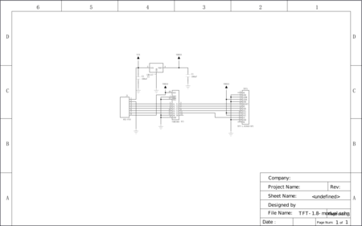

Цветной TFT-дисплей 128×160 / 1,8”
Цветной TFT-экран пригодится для вывода яркого текста, информативных графиков и живых анимаций.
Дисплей общается с управляющей платформой через последовательную шину SPI c дополнительными пинами управления. В микроконтроллерах есть два способа реализации шины SPI: аппаратная и программная.
При использовании аппаратного интерфейса, скорость отрисовки экрана будет значительно выше в сравнении с программной.
На платах Arduino шина «SPI» разведена на ICSP-разъёме. В качестве примера подключим дисплей к платформе Arduino Uno через макетную плату.
Если контакты аппаратного интерфейса SPI используются другими модулями — воспользуйтесь программной реализацией протокола SPI. Софтовая эмуляция шины позволяет использовать сигналы данных на всех пинах управляющей платы. В качестве примера подключим дисплей к платформе Arduino Uno через макетную плату.
Дисплей модуля выполнен по технологии TFT с диагональю 1,8 дюйма. Разрешение экрана составляет 128×160 точек с глубиной 65536 цветов.
Матрица экрана подключена к встроенному чипу ST7735, который выполняет роль моста между экраном и микроконтроллером.
Систему координат дисплея удобно представить в виде сетки, каждая ячейка которой является отдельным пикселем. Местоположение пикселя задается парой координат «x» и «y».
На плате дисплейного модуля расположена гребёнка из восьми контактов для питания экрана и взаимодействия с управляющей электроникой.
|
Вывод |
Имя сигнала |
Альтернативное имя сигнала |
Описание |
|
1 |
VIN |
Питание дисплея напряжением 5 вольт | |
|
2 |
GND |
Земля | |
|
3 |
RST |
RESET |
Аппаратный сброс дисплея. Активный низкий уровень. |
|
4 |
RS |
DC/A0 |
Выбор передачи данных или команд: |
|
5 |
SDA |
MOSI/DO |
Данные |
|
6 |
SCL |
SCK |
Синхронизация |
|
7 |
CS |
SS |
Выбор экрана. Используется для подключения нескольких дисплеев параллельно. Активный низкий уровень. |
|
8 |
VDD33 |
Напряжение питания 3,3 В. Подключать не обязательно. |
На обратной стороне дисплейного модуля распаян преобразователь логических уровней 74HC365. Буфер служит для согласования напряжения между экраном и управляющей платой. Микросхема даёт совместимость дисплея c 3,3- и 5-вольтовыми управляющими платами.
Понижающий линейный преобразователь LM1117 с выходом 3,3 вольта обеспечивает питание и подсветку дисплея. Максимальный выходной ток составляет 800 мА.
Принципиальная и монтажная схемы

{kind=link}